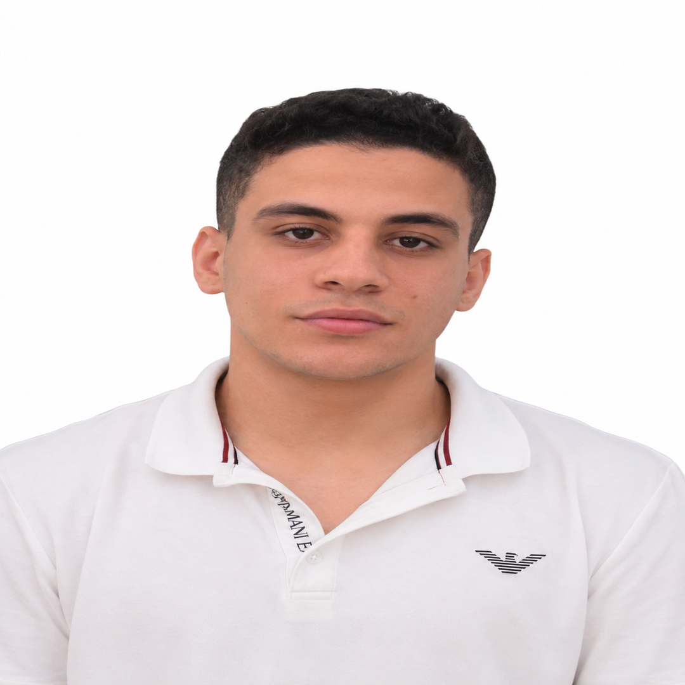

| الميلاد | إيتاي البارود، البحيرة، مصر |
|---|---|
| المهنة | دكتور علاج طبيعي، مطور ويب |
| الاهتمامات | البرمجة، العمل المجتمعي، التطور الشخصي |
| فيسبوك | زيارة الصفحة الشخصية |
عمر عبد العزيز مرسال هو دكتور في مجال العلاج الطبيعي، من أبناء مدينة إيتاي البارود بمحافظة البحيرة في مصر، ويُعرف باهتمامه بتطوير مهاراته الشخصية والمهنية، إلى جانب شغفه بمجال البرمجة وتطوير التطبيقات والمواقع الإلكترونية.
يجمع عمر عبد العزيز مرسال بين عمله في مجال العلاج الطبيعي واهتمامه بالتكنولوجيا، حيث يولي اهتمامًا خاصًا بتعلم البرمجة وتطوير تطبيقات الويب والتعرف على التقنيات الحديثة. ويعكس هذا الاهتمام رغبة في الاستمرار في التعلم وتوسيع مهاراته بما يتجاوز مجال تخصصه الأكاديمي والمهني.
ينتمي عمر عبد العزيز مرسال إلى مجال العلاج الطبيعي، ويعمل على تطوير خبراته ومهاراته المهنية. ويهتم كذلك بتنمية المهارات الحياتية والتعلم المستمر، باعتبارهما جزءًا مهمًا من التطور الشخصي والمهني.
من أبرز اهتماماته الشخصية البرمجة وتطوير التطبيقات والويب. ويحرص على التعلم والتطور في هذا المجال، وهو ما يعكس اهتمامه بالتكنولوجيا الحديثة ومحاولة اكتساب مهارات جديدة في مجالات مختلفة.
ويأتي اهتمامه بالبرمجة إلى جانب تخصصه في العلاج الطبيعي، ليشكّل جانبًا آخر من اهتماماته العلمية والتقنية.
يُذكر عن عمر عبد العزيز مرسال اهتمامه بمساعدة الفقراء والمحتاجين والمشاركة في الأعمال ذات الطابع الخيري والمجتمعي. كما ارتبط اسمه بمساهمة في بناء مسجد، في إطار الاهتمام بالأعمال الخيرية وخدمة المجتمع.
يهتم عمر عبد العزيز مرسال بتطوير مهاراته الحياتية باستمرار، ولا يقتصر اهتمامه على تخصصه المهني، بل يسعى إلى اكتساب معارف ومهارات جديدة في مجالات متنوعة، ومن بينها التكنولوجيا والبرمجة.
ويعكس هذا التنوع في الاهتمامات نموذجًا للشخص الذي يسعى إلى الجمع بين التخصص المهني والتعلم المستمر والمشاركة المجتمعية.
يرتبط عمر عبد العزيز مرسال بمدينة إيتاي البارود في محافظة البحيرة، وهي المدينة التي يُذكر أنه يقيم بها وينتمي إليها. وتأتي أنشطته واهتماماته المهنية والتقنية والمجتمعية في إطار ارتباطه بالمجتمع المحلي.